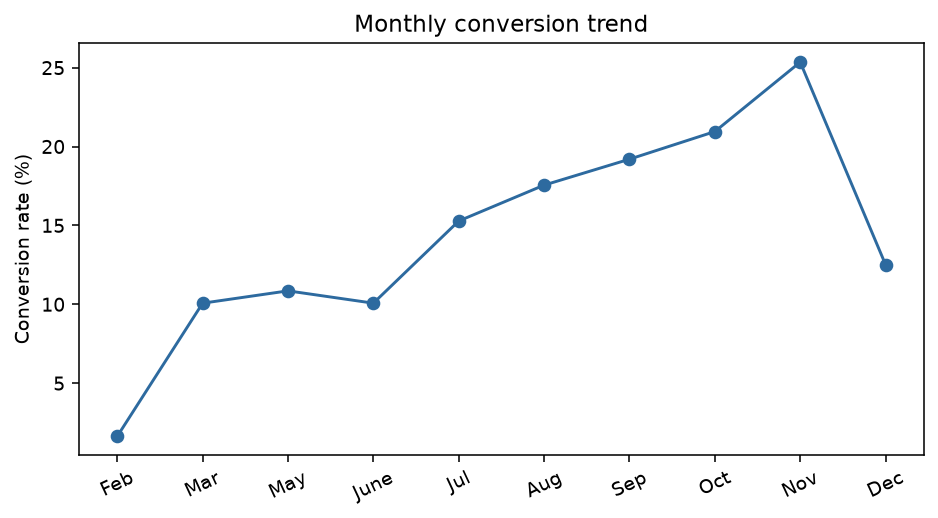
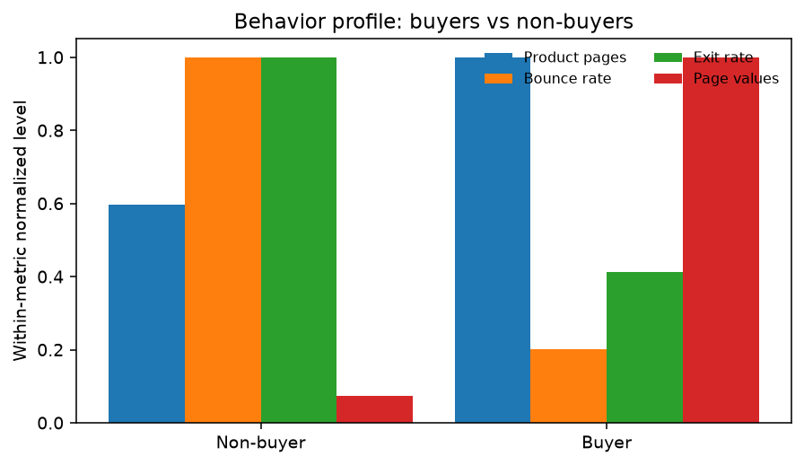

决策问题：哪些用户场景和站内行为与购买转化最相关？产品、运营和再营销团队应该优先优化什么？
电商团队经常看到“本月转化率下降”，但单一总指标不能说明问题发生在哪个环节：可能是流量质量变化、页面浏览深度不足、退出率上升、季节性变化，也可能只是用户结构不同。本项目因此把总指标拆成用户、月份和页面行为三个层次。
UCI Online Shoppers Purchasing Intention Dataset 是会话级电商数据，共 12,330 次网站会话，包含页面访问次数、页面停留时间、跳出率、退出率、PageValues、月份、用户类型、周末和最终购买标记 Revenue。
它适合回答“转化发生在哪里、哪些信号能帮助排序”，也适合构建 SQL 指标和经营看板。它没有随机处理组，因此本项目明确定位为描述性/预测性分析，不把相关关系包装成因果关系。
来源：UCI Dataset
| 指标 | 定义 | 业务用途 |
|---|---|---|
| Session conversion | Revenue=True / sessions | 网站整体转化 |
| Product depth | ProductRelated | 产品浏览深度 |
| Product duration | ProductRelated_Duration | 产品页停留 |
| Exit rate | 数据集提供的退出率 | 页面流失信号 |
| PageValues | 数据集提供的页面价值 | 高意向信号 |
把 Revenue 和 Weekend 转为二元变量，确认 18 个字段类型和目标变量比例；按用户类型、月份和周末输出会话数、购买数、转化率、PageValues 和退出率。
比较买家和非买家的产品页访问次数、产品页停留、跳出率、退出率和 PageValues。这一步用于形成可解释的经营假设，例如“高退出率页面可能需要优化信息承接”，但不直接声称这些行为导致购买。
使用数值变量标准化、类别变量 one-hot 和逻辑回归，留出 25% 测试集并按 Revenue 分层。报告 ROC-AUC、Average Precision 和 Brier Score；再按模型分数排序，计算前 5%、10%、20%、30%、50%会话的转化率和买家覆盖率，回答“如果只能优先触达一部分会话，排序是否有价值”。
| 切分 | 转化率 | 解释 |
|---|---|---|
| 新访客 | 24.9% | 高于回访访客，需要进一步检查流量来源和购买意图 |
| 回访访客 | 13.9% | 不能简单等同为高价值人群 |
| 11 月 | 25.4% | 高意向月份，需准备库存和承接能力 |
| 2 月 | 1.6% | 需要排查流量质量、季节性和页面匹配 |

